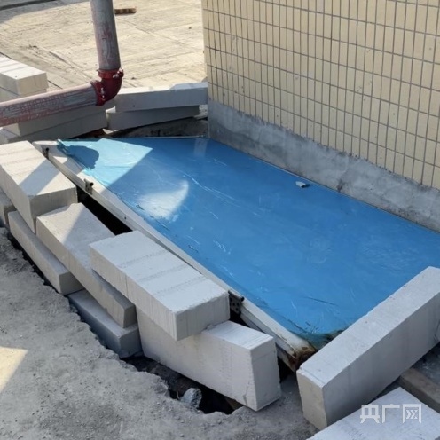
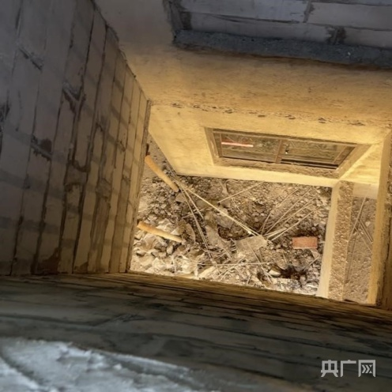
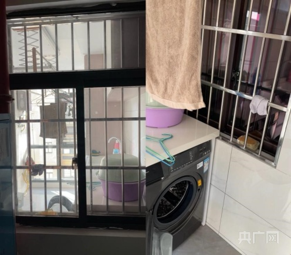
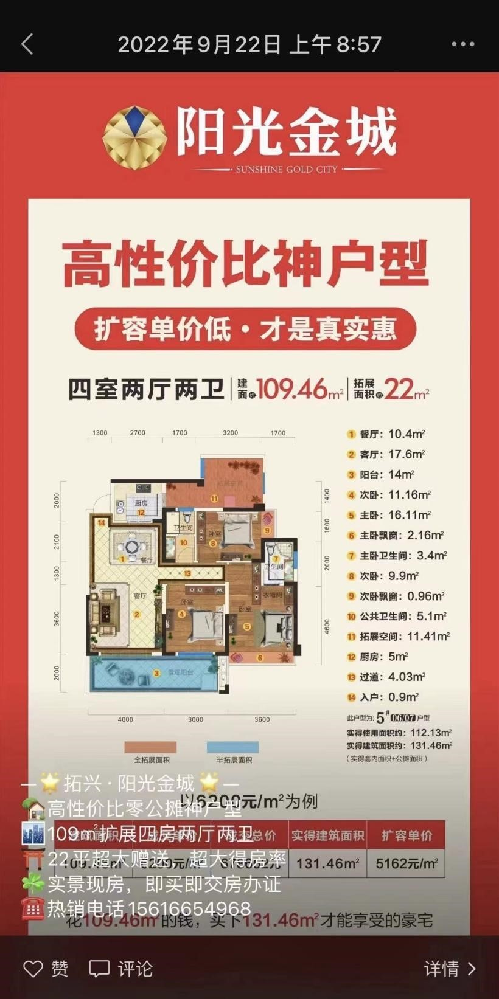
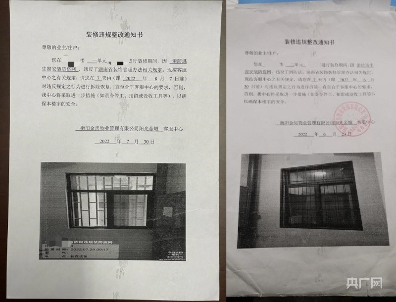
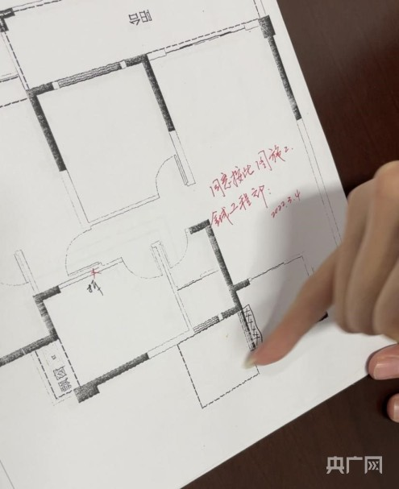
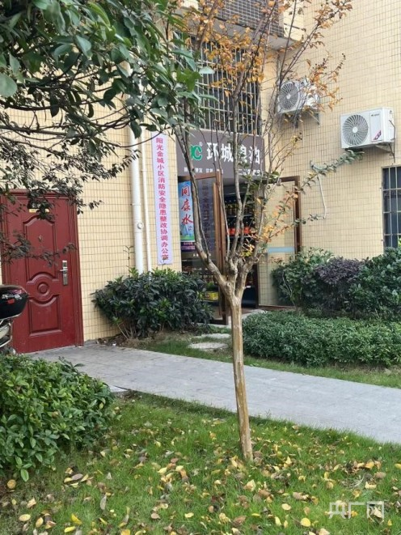
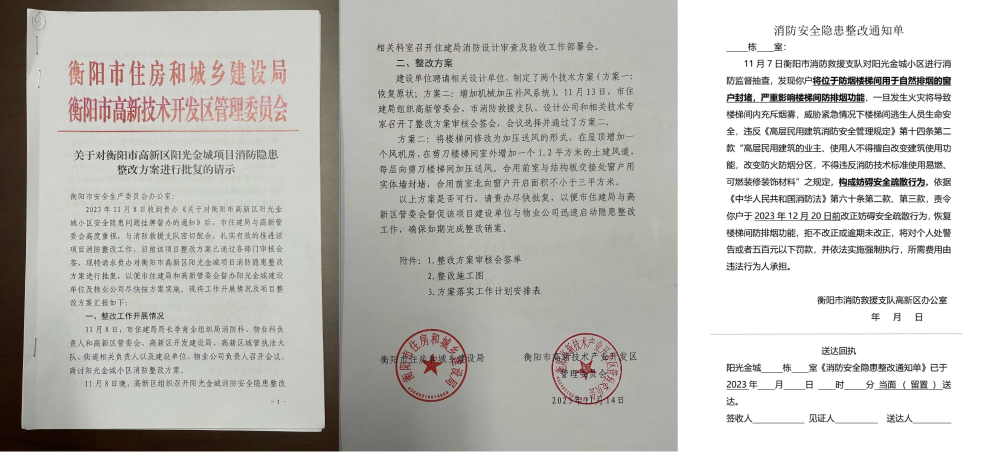
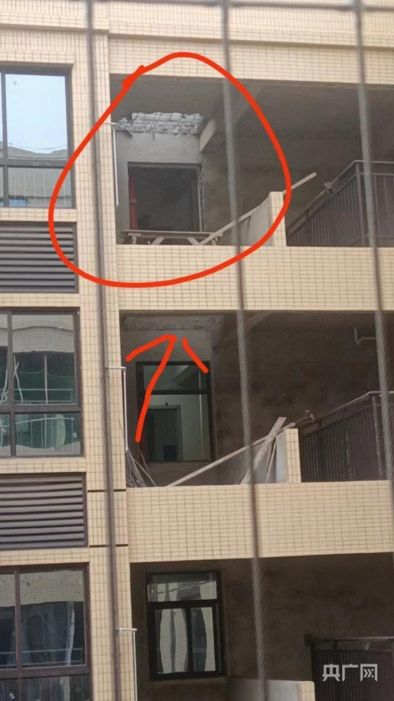

央广网北京12月1日消息（总台中国之声记者江晓晨）据中央广播电视总台中国之声报道，近日，一则“开发商交房后因消防检查不合格私挖消防井”的消息引发热议。事发地点位于湖南省衡阳市高新区阳光金城小区，小区多位业主向总台中国之声反映，他们的房子在去年6月份完成验收，已经拿到了房产证。打井一事，事先并没有告知业主。已经完成验收的房子，为何会出现消防检查不合格的情况？计划从33层贯穿楼板打到1层，这样的整改方式依据是什么？对楼体安全有没有影响？
小区内多栋楼需打井解决消防排风问题
中国之声记者跟随小区业主董先生（化名）来到衡阳市阳光金城小区5号楼33层楼楼顶打井的位置，井口已被蓝色的木质门板覆盖，周围放置着灰色的砖头。


5号楼33层打井位置现状（江晓晨 摄）
记者：目前只打了这一处？
董先生：打了两层，还有32层下面。这一层现在还没卖，下面的32层我们可以下去看一下，那是已经卖了。
董先生告诉记者，他是第一个发现打井作业的，位置在5号楼07户型楼梯间窗户外的平台处。包括他们家在内，不少业主已将该平台围入屋内，做成了生活阳台。除了5号楼，小区内多栋楼都需要打井。
其他业主：听物业是这么介绍的，说1、3、5、6、8，每个单元都要打一个井。

董先生家扩展区内外示意图（江晓晨 摄）
业主称扩展面积为买房时赠送
董先生购买的户型建筑面积为109.46平方米，正是当时售楼处广告中介绍的“神户型”，该房型为4室2厅2卫，总赠送面积约22平方米，按宣传所示，实际得房面积超过130平方米。
董先生：这块地方不是我们业主私自搭建的，是开发商说我们买房子赠送给业主的。
记者：这一块是属于之前你们买的扩展面积？
董先生：对。我当初就是看中这块面积可以做一个小洗衣房，所有的业主都是这样考虑的。
记者：当时卖房的时候，（开发商）告诉你这块面积你们自由支配的？
董先生：对。

阳光金城的销售在朋友圈展示广告内容（小区业主供图）
记者也向多位业主求证了董先生的说法。
业主甲：我们业主大部分买的都是现房，能够看到房子什么样子。
业主乙：而且当时销售也跟我们介绍了这块场地的使用，可以用来做洗衣房。
业主丙：5栋和对面3栋交房的时间是去年6月28号，开发商的宣传单页、打在售楼部的横幅，一直都是明确表示这一部分是由业主自由拓展的面积，并且以此作为卖点。
开发商称扩展面积有使用规定
扩展面积是否可以自由支配？开发商拓兴集团副总经理唐孟扬说，扩展区可以使用，但有具体的使用规定。
唐孟扬介绍：“设计之初就是一个平台有一个窗户，窗户这里不封堵，如果真起火了，把排烟窗打开，烟是不是就排到外面去了？这个标准当时是销售在现场，我不清楚。但是网签合同上有明示，买的是什么户型多少面积。至于消防平台赠送，实际上是优先使用原则，物业手册里写了——不得封堵消防通风窗口，而且业主装修都是签了字的。针对后期入住的业主，装修封堵了消防窗口，物业也给其下了整改通知书的。”

物业提供的整改通知书（江晓晨 摄）
小区物业公司项目经理王元德补充：“业主来收房，我们跟业主明确说了这个地方可以用，但不能够把它封闭，影响消防安全。并且我们还专门跟业主签了一个《阳光金城小区业主试装修重点注意事项》的承诺书，有些业主听，他就知道我把它封闭起来可能会影响消防，就没有进行封闭。”

开发商拓兴集团负责人解释扩展区使用规范（江晓晨 摄）
这一说法，业主们并不认可——
穆女士：装修的过程中，这里要敲墙、要砌墙、要封窗，所有的流程都要先跟物业沟通，物业同意之后，你才可以这样做。就像这个户型，封窗做生活阳台，也是经过了物业的允许。
记者：那你们也是跟物业报备过的，是吧？
董先生：肯定报备过呀，我们所有的装修都是一样要交保证金的。
其他业主：装修完之后，会再通知物业过来验收一遍。
小区业主提供住宅质量保证书（江晓晨 摄）

小区内挂牌办公地点（小区业主供图）
此前，衡阳市高新区住建局回应媒体称，不少业主因装修封堵了自然通风窗口，导致楼栋存在消防隐患，打井作业正是在进行整改。因为业主们反对，在打穿两层楼板后，11月26日，施工暂停。董先生说，停工后的这几天，小区内挂上了一个“阳光金城小区消防安全隐患整改协调办公室”的牌匾，但对于后续的整改方案，业主们表示并不知情。
董先生：我们不接受打楼板这个整改方案。住建部门有什么通知可以发给物业，物业可以在群里通知我们，没有任何形式的通知。
万先生：整改方案物业也没有给我们文件，物业告诉我们需要打井，说是消防不过关，但是交房之前消防已经合格了的。
骆女士：我们是有房产证的，就不存在说验收不合格这回事。
小区业主提供的房产证（江晓晨 摄）
昨天，衡阳高新区开发建设局、阳光金城小区开发商以及小区物业的相关负责人出面，回应业主关心的问题。房屋验收合格后出现消防隐患，问题出在哪儿？
高新区开发建设局：该楼盘多栋楼在消防巡查时发现问题，需要整改
衡阳高新区开发建设局局长凌浩提供的情况通报显示，2023年11月6日，国务院安全生产和消防工作考核巡查组在考核中发现，阳光金城高层住宅小区1号楼防烟楼梯间内多数楼层的自然通风窗口因业主（住户）装修用作自用空间导致被封堵，影响楼梯间防排烟功能，被列入突出问题隐患交办整改。11月7日，衡阳市消防救援部门进一步核查发现，该小区3、5、6、8号楼同样存在类似的问题。
凌浩表示：“整改有两个方向。第一个方向是恢复原状，把所有东西全部拆掉。第二个是在现有基础上整改，也有两个方向，一个是自然排烟，一个是机械排烟。经过摸底涉及这次整改的628户，算起来将近2000人，恢复原状的难度非常大，还是倾向于（现有基础上）整改。”

整改方案和整改通知单（江晓晨 摄）
凌浩明确，考核巡查发现业主们封闭的是防烟楼梯间自然通风窗口。近期的摸排过程没有大面积通知业主，是因为这段时间一直在论证方案。“11月13号初步方案审定；14号市住建局联合高新区报市安委办审批；18号就把方案批下来了，需要从技术层面审定；21号第一次技术方案盖了章送回来；24号市住建局组织专家对方案进行正式评审；25号市里开了调度会，每个人可能对这个事情掌握的信息量不一样，我对这个事情来龙去脉掌握得最清楚，包括街道、社区的人他也说不清楚。为了更好地宣传，由开发商安排施工单位先做一个样板。”
凌浩进一步解释，要在5号楼开挖一个机械加压送风管道作为整改工程的样板。之前他们与物业口头核实，要求挖的是还未出售的房源。“关键的环节是有正式文件的，我们现在整改全部是依法依规，包括施工图审查都是线上审批，施工许可证也是网上审批，今后验收也是要网上通过，公开透明。”
凌浩表示，施工许可证在施工图审查完成后才能办下来，之前已经动工开挖。

此前业主拍到对面楼打井作业（小区业主供图）
开发商称专家论证贯穿打井不会伤害楼体
从33层贯穿打井到1楼的做法是否会对已建好的楼体造成损伤？拓兴集团副总经理唐孟扬说，贯穿打井是通过专家论证后采取的方案。
唐孟扬表示：“因为这个窗户关系到整层楼的生命安全，都会有施工报建，有审图，有竣工验收，有监理，有资质的施工队伍进场，跟正常起房子都是一样的。不会对楼层的结构有影响，它不是承重墙，不对上下起承载作用，就像我们手掌在这里，上面放个东西，承载的就是上面所在的物重嘛。”
对之后整改工作的开展情况，衡阳高新区开发建设局局长凌浩表示，调查组已进场工作，会给社会一个交代。
“整改是衡阳市住建局牵头，包括对相关环节、相关部门的调查，从上个礼拜五开始调查组就进场了。是三个组，一个综合组，一个管理组，一个技术组。整改我们非常重视，想给老百姓，基于利益最大化，影响最小化来做。整改完后能够经得起检验。这个事情，相关的开发商、物业公司以及相关职能部门如果有责任，调查组对省里也有交代，对社会也肯定有交代。是谁的责任就是谁的责任，该怎么处理就怎么处理。”凌浩表示。
后续整改落实情况如何？中国之声将持续关注。
转载申请事宜以及报告非法侵权行为，请联系我们：010-56807194